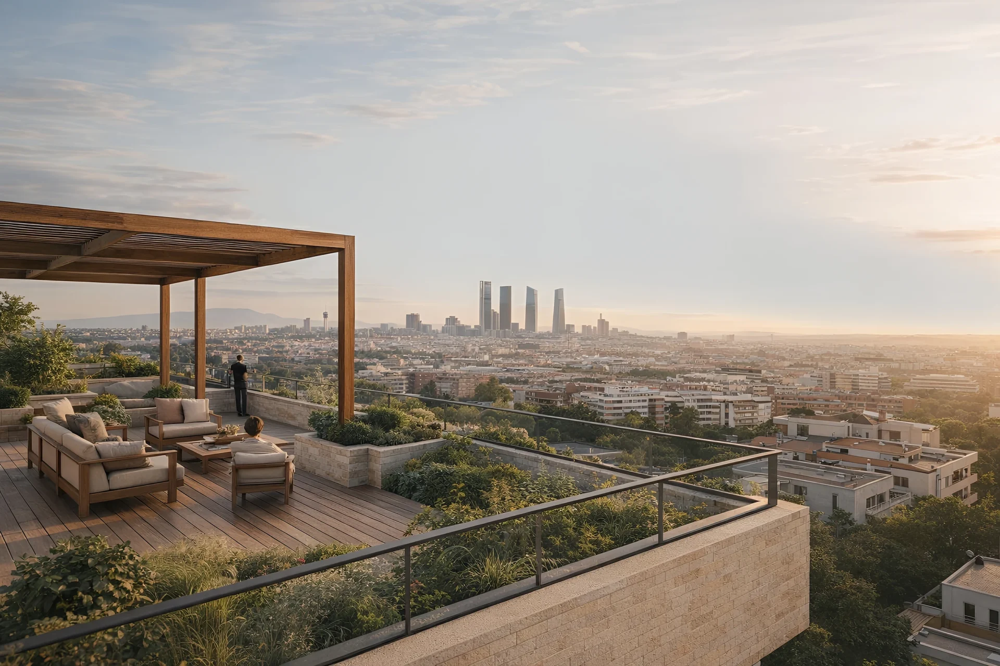
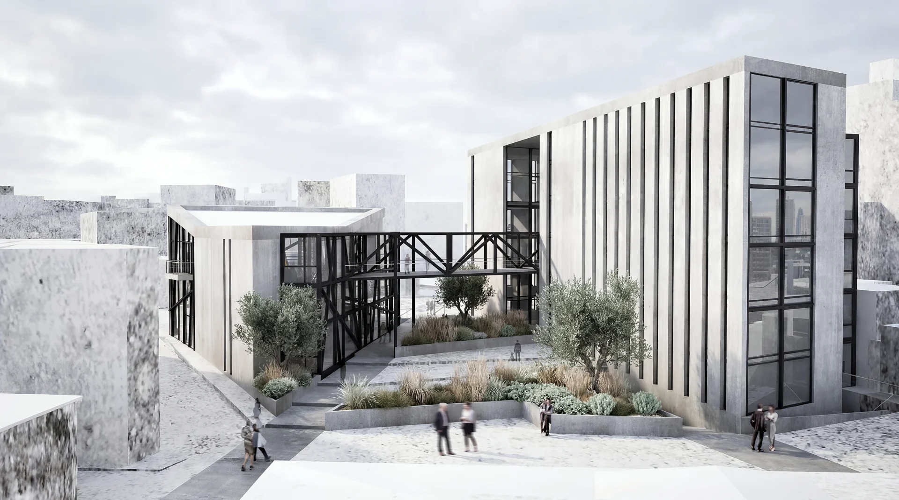

The investment lifecycle, connected
Value is created and protected through decisions made before purchase, during design and throughout delivery. Wolfblanc can lead the complete process or provide focused expertise at a specific stage, with one senior architect accountable for the agreed scope.
Before acquisition
Independent technical due diligence reviews condition, available documentation, planning exposure, building services and indicative intervention priorities before capital is committed.
Development strategy
We define the brief, use, spatial potential, constraints, target budget and programme so the opportunity can be tested before design effort expands.
Design and approvals
Architecture, interiors, landscape and urban design are coordinated with engineering, BIM, permits and visualization around one development objective.
Delivery and project control
Procurement, contractor comparisons, construction oversight, programme, budget status, changes, quality and handover are tracked against the approved project.
Services aligned with the decision
The scope is assembled around the asset, its stage and the decisions that carry the greatest risk or value.
Technical due diligence
Buyer-side inspection, document review, intervention priorities and decision-ready technical reporting.
Explore the service →Architecture and development design
New buildings, adaptive reuse, rehabilitation and transformation from early strategy through technical delivery.
Explore the service →Project management
Brief, consultants, permits, procurement, construction oversight, change control and handover within one coordinated process.
Explore the service →Project monitoring
Structured site visits and concise reporting keep progress, quality observations, open questions and upcoming decisions visible.
Explore project monitoring →Where useful, urban design, BIM coordination, architectural visualization and hospitality expertise support approvals, procurement, financing discussions, operations and market communication.
Three ways to engage
Acquisition advice
Independent technical review before a purchase, with clear findings, priorities and next steps.
Development scope
Feasibility, brief, design and approvals for a defined asset or development phase.
Full project delivery
Architecture and project control from early analysis through procurement, construction and handover.
Project monitoring for investors at a distance
Agreed site visits can produce written reports covering progress, quality observations, open technical questions, budget status and decisions requiring client input.
Explore project monitoring →Professional credentials and relevant experience
Our team combines COAM registration in Spain, the SAR/MSA professional title in Sweden and TEE-TCG registration in Greece, together with WELL AP accreditation. Each commission is coordinated around the planning, technical and contractual requirements of its market.
We work in English, Spanish, Swedish and Greek, helping international investors understand local decisions without losing continuity or design intent.
20+
Years combined experience
3,500+
Residential units delivered
3
European markets
4
Working languages
Selected project experience

Edificio Salamanca
Residential and commercial · Madrid

Distrito AXIS
Corporate headquarters · Barcelona

Selva Hotel
Hospitality architecture · Grazalema
The first investment conversation
We begin with the asset, its current stage, the investment thesis, target market, programme and known constraints. We then define the decisions that require architectural or technical input and document the proposed scope, responsibilities, fees and next steps.